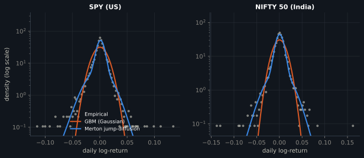
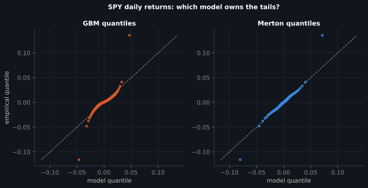
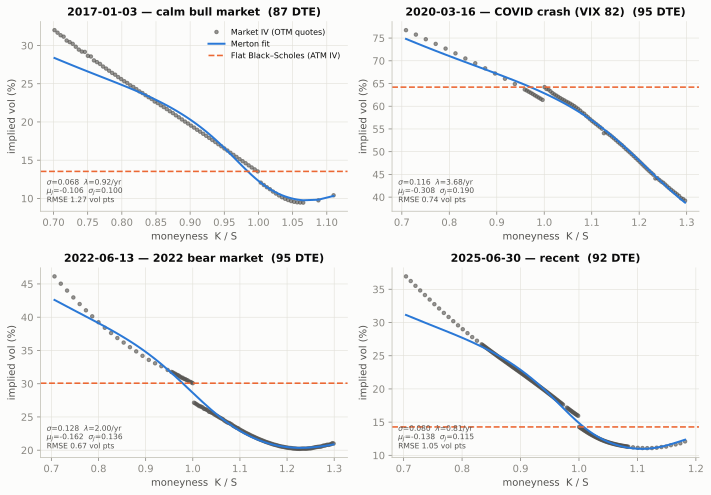
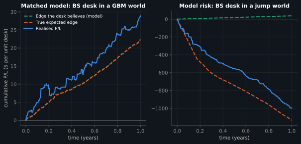
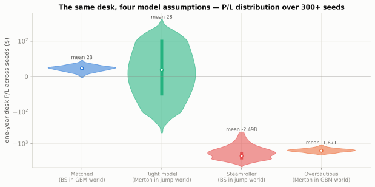
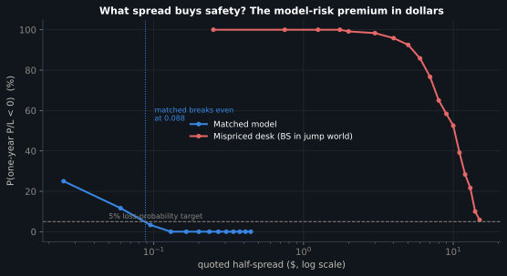
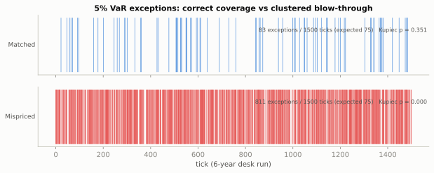
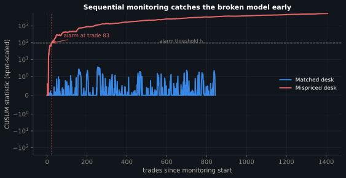

Every figure regenerates from scripts/run_experiments.py
and scripts/make_figures.py; every table below is read live from the
JSON files in this site's assets/.
1 · Real returns reject the Gaussian world
Seventeen-plus years of daily returns on each index, fitted by maximum likelihood.

Fig 1. Daily-return densities on a log scale. The Gaussian (orange)
collapses many decades too fast in the tails; the fitted Merton mixture (blue) tracks the
empirical points (grey) across the entire range — including crash days a GBM world
essentially forbids.

Fig 2. QQ plots for SPY. Against GBM the empirical quantiles peel off
the diagonal violently in both tails; against the fitted Merton model they sit close to
the line — the jump mixture owns the tails.
2 · What the options market believes
Merton fitted to four real SPY chains (~90 days to expiry), OTM quotes, vega-weighted.

Fig 3. Real implied-volatility skews (grey dots) vs the 4-parameter
Merton fit (blue) and the flat smile Black–Scholes implies (orange dashed). Even in
the calmest market the smile prices roughly one −10% jump per year; in March 2020
it priced λ ≈ 3.7 crashes/year with mean size −31%.
3 · The desk under model risk

Fig 4. One representative seed. Matched desk (left): realised P/L
climbs along the believed and true edge lines. Mispriced desk (right): belief and
reality diverge from the first fill.

Fig 5. One-year P/L distribution across seeds (symlog scale).
Note both mismatched scenarios lose catastrophically in both directions of
mispricing — with price-elastic clients, quoting too high is punished by adverse
selection just as quoting too low is punished by the steamroller.

Fig 6. Loss probability vs quoted half-spread. The matched desk is
95%-safe from 8.8¢. The mispriced desk's curve decays so slowly that no half-spread
below $15 clears the bar — spread cannot buy back a wrong model when flow is informed.
4 · Validation: catching it from P/L alone

Fig 7. 5% VaR exception timeline over a six-year run. Matched desk:
83 exceptions vs 75 expected, scattered (Kupiec p = 0.35). Mispriced desk: 811,
clustered into jump episodes (Kupiec and Christoffersen p < 10−16).

Fig 8. One-sided CUSUM on spot-scaled edge residuals. The matched
desk's statistic breathes below threshold for 900+ trades; the mispriced desk crosses
at trade 83 — an alarm roughly three weeks into a six-year run.
Tables could not be loaded —
if you opened this file directly from disk, serve the folder instead
(python -m http.server in docs/) or view the hosted site.